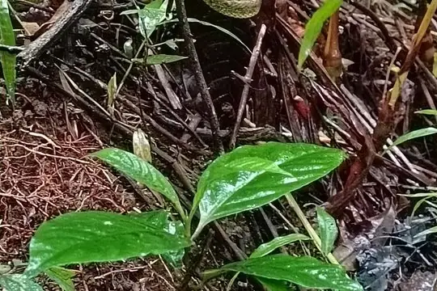
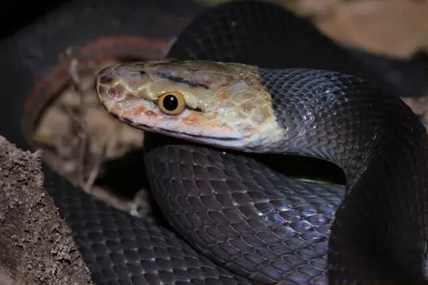

Snakes of Equatorial Guinea
62 living snake species are recorded in Equatorial Guinea in SnakeList: 19 venomous and 43 non-venomous, from 10 families.
- 62living species
- 19venomous
- 43non-venomous
- 10families
These totals count the unique living snake species SnakeList records in Equatorial Guinea. A species counts if it is recorded anywhere in the country, so not every snake lives in every part of it.
Species
Showing 62 species
 African Banded SnakeChamaelycus fasciatus
African Banded SnakeChamaelycus fasciatus African Brown Water SnakeAfronatrix anoscopus
African Brown Water SnakeAfronatrix anoscopus African Bush ViperAtheris squamigera
African Bush ViperAtheris squamigera African Rock PythonPython sebae
African Rock PythonPython sebae African Tree CobraPseudohaje goldii
African Tree CobraPseudohaje goldii Angola Blind SnakeAfrotyphlops angolensis
Angola Blind SnakeAfrotyphlops angolensis- No photo yetAnnobon Wood SnakePhilothamnus girardi
 Black-lined Green SnakeHapsidophrys lineatus
Black-lined Green SnakeHapsidophrys lineatus Blackbelly SnakeHydraethiops melanogaster
Blackbelly SnakeHydraethiops melanogaster Blandings Tree SnakeToxicodryas blandingii
Blandings Tree SnakeToxicodryas blandingii Blotched Blind SnakeAfrotyphlops congestus
Blotched Blind SnakeAfrotyphlops congestus Boulenger's Mole ViperAtractaspis boulengeri
Boulenger's Mole ViperAtractaspis boulengeri Brahminy BlindsnakeIndotyphlops braminus
Brahminy BlindsnakeIndotyphlops braminus- No photo yetCaesar's African Water SnakeGrayia caesar
 Calabar Ground PythonCalabaria reinhardtii
Calabar Ground PythonCalabaria reinhardtii- No photo yetCameroon RacerPoecilopholis cameronensis
 Cameroon Snake-EaterPolemon notatus
Cameroon Snake-EaterPolemon notatus- No photo yetCameroon Thread SnakeMyriopholis perreti
 Central African Egg-eating SnakeDasypeltis fasciata
Central African Egg-eating SnakeDasypeltis fasciata Collared Snake-eaterPolemon collaris
Collared Snake-eaterPolemon collaris Diamondback Night StalkerToxicodryas adamanteus
Diamondback Night StalkerToxicodryas adamanteus Emerald Green SnakePhilothamnus heterodermus
Emerald Green SnakePhilothamnus heterodermus Emerald SnakeHapsidophrys smaragdinus
Emerald SnakeHapsidophrys smaragdinus Equatorial File SnakeMehelya poensis
Equatorial File SnakeMehelya poensis Flat Wolf SnakeLycophidion laterale
Flat Wolf SnakeLycophidion laterale Forest CobraNaja melanoleuca
Forest CobraNaja melanoleuca Forest Night AdderCausus lichtensteinii
Forest Night AdderCausus lichtensteinii- No photo yetGabon Beaked SnakeLetheobia caeca
 Gaboon ViperBitis gabonica
Gaboon ViperBitis gabonica Green Bush SnakePhilothamnus nitidus
Green Bush SnakePhilothamnus nitidus- No photo yetGuiral's File SnakeLimaformosa guirali
 Günther's Black SnakeBothrolycus ater
Günther's Black SnakeBothrolycus ater Günther's Green Tree SnakeDipsadoboa unicolor
Günther's Green Tree SnakeDipsadoboa unicolor Hallowell's House SnakeBoaedon virgatus
Hallowell's House SnakeBoaedon virgatus
Hetfield's Bush ViperAtheris hetfieldi Jameson's MambaDendroaspis jamesoni
Jameson's MambaDendroaspis jamesoni Kirtland's Twig SnakeThelotornis kirtlandii
Kirtland's Twig SnakeThelotornis kirtlandii Large-eyed Green TreesnakeRhamnophis aethiopissa
Large-eyed Green TreesnakeRhamnophis aethiopissa- No photo yetMany-banded SnakeNaja multifasciata
 Marsh Snake (fuliginoides)Natriciteres fuliginoides
Marsh Snake (fuliginoides)Natriciteres fuliginoides Mocquard's African Ground SnakeGonionotophis brussauxi
Mocquard's African Ground SnakeGonionotophis brussauxi Mole Viper (corpulenta)Atractaspis corpulenta
Mole Viper (corpulenta)Atractaspis corpulenta Mole Viper (reticulata)Atractaspis reticulata
Mole Viper (reticulata)Atractaspis reticulata Olive House Snake (olivaceus)Boaedon olivaceus
Olive House Snake (olivaceus)Boaedon olivaceus Ornate African Water SnakeGrayia ornata
Ornate African Water SnakeGrayia ornata Pale Wolf SnakeLycophidion irroratum
Pale Wolf SnakeLycophidion irroratum Pale-headed Forest SnakeBuhoma depressiceps
Pale-headed Forest SnakeBuhoma depressiceps
Red-blacked Striped SnakeBothrophthalmus brunneus Rhinoceros Viper (nasicornis)Bitis nasicornis
Rhinoceros Viper (nasicornis)Bitis nasicornis Ringed Water CobraNaja annulata
Ringed Water CobraNaja annulata Small-eyed File SnakeMehelya stenophthalmus
Small-eyed File SnakeMehelya stenophthalmus Smith's African Water SnakeGrayia smithii
Smith's African Water SnakeGrayia smithii Spotted Dagger-tooth Tree SnakeRhamnophis batesii
Spotted Dagger-tooth Tree SnakeRhamnophis batesii Spotted Night AdderCausus maculatus
Spotted Night AdderCausus maculatus Thirteen-scaled Green SnakePhilothamnus carinatus
Thirteen-scaled Green SnakePhilothamnus carinatus Uganda House SnakeHormonotus modestus
Uganda House SnakeHormonotus modestus Underwood's Tree SnakeDipsadoboa underwoodi
Underwood's Tree SnakeDipsadoboa underwoodi Weiler's Tree SnakeDipsadoboa weileri
Weiler's Tree SnakeDipsadoboa weileri Western Forest Centipede-eaterAparallactus modestus
Western Forest Centipede-eaterAparallactus modestus Yabassi Tree SnakeDipsadoboa duchesnii
Yabassi Tree SnakeDipsadoboa duchesnii Yellow-throated Bold-eyed Tree SnakeThrasops flavigularis
Yellow-throated Bold-eyed Tree SnakeThrasops flavigularis- No photo yetThrasops aethiopissa
No snakes in Equatorial Guinea match.
Equatorial Guinea’s snakes in numbers
- Families: Colubridae 24, Lamprophiidae 12, Atractaspididae 7, Viperidae 6, Elapidae 5, Typhlopidae 4, Boidae 1, Leptotyphlopidae 1, Pseudoxyrhophiidae 1, Pythonidae 1.
- 1 is recorded in no other country or territory in SnakeList: Hetfield's Bush Viper.
How precisely they are recorded
Of the 62 living species recorded in Equatorial Guinea, 5 are recorded by province in SnakeList’s data; 57 are recorded only for Equatorial Guinea as a whole, so the province pages list them as possible rather than recorded. SnakeList records each species by province, not by exact spot, so a species listed for a province may live in only part of it.
Provinces
The provinces where SnakeList records snakes, with how many living species are recorded in each. Each page has its species, venomous snakes, families, the species found only there, its cities and neighbours.
- Bioko Sur 5 species
No place matches that.